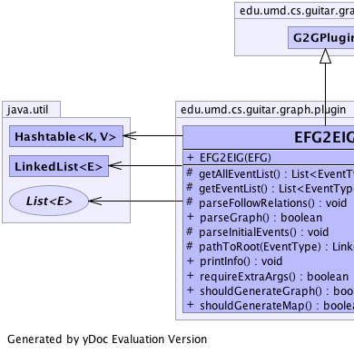
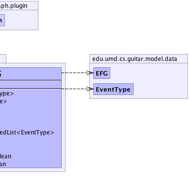

edu.umd.cs.guitar.graph.plugin.G2GPlugin
edu.umd.cs.guitar.graph.plugin.EFG2EIG
edu.umd.cs.guitar.graph.plugin.G2GPlugin
edu.umd.cs.guitar.graph.plugin.EFG2EIG
|
||||||||
| PREV CLASS NEXT CLASS | FRAMES NO FRAMES | |||||||
| SUMMARY: NESTED | FIELD | CONSTR | METHOD | DETAIL: FIELD | CONSTR | METHOD | |||||||
java.lang.Object
public class EFG2EIG
|  |  |
| Constructor Summary | |
|---|---|
EFG2EIG(edu.umd.cs.guitar.model.data.EFG inputGraph)
|
|
| Method Summary | |
|---|---|
protected java.util.List<edu.umd.cs.guitar.model.data.EventType> |
getAllEventList()
Return ALL the events in the input graph. |
protected java.util.List<edu.umd.cs.guitar.model.data.EventType> |
getEventList()
Get event list of interest. |
protected void |
parseFollowRelations()
Get follow relations in the input graph |
boolean |
parseGraph()
|
protected void |
parseInitialEvents()
Get initial events |
protected java.util.LinkedList<edu.umd.cs.guitar.model.data.EventType> |
pathToRoot(edu.umd.cs.guitar.model.data.EventType event)
Find path to root |
void |
printInfo()
Print info after operation is complete. |
boolean |
requireExtraArgs()
Requires extra arguments |
boolean |
shouldGenerateGraph()
Indicate if an output graph file needs to be generated for this plugin. |
boolean |
shouldGenerateMap()
Imdicate if a MAP file needs to be generate for this plugin. |
| Methods inherited from class edu.umd.cs.guitar.graph.plugin.G2GPlugin |
|---|
getGraph, getMap |
| Methods inherited from class java.lang.Object |
|---|
clone, equals, finalize, getClass, hashCode, notify, notifyAll, toString, wait, wait, wait |
| Constructor Detail |
|---|
public EFG2EIG(edu.umd.cs.guitar.model.data.EFG inputGraph)
inputGraph - | Method Detail |
|---|
protected void parseFollowRelations()
public boolean parseGraph()
parseGraph in class edu.umd.cs.guitar.graph.plugin.G2GPluginprotected java.util.List<edu.umd.cs.guitar.model.data.EventType> getAllEventList()
protected java.util.List<edu.umd.cs.guitar.model.data.EventType> getEventList()
protected void parseInitialEvents()
protected java.util.LinkedList<edu.umd.cs.guitar.model.data.EventType> pathToRoot(edu.umd.cs.guitar.model.data.EventType event)
event -
public boolean shouldGenerateGraph()
shouldGenerateGraph in class edu.umd.cs.guitar.graph.plugin.G2GPluginpublic boolean shouldGenerateMap()
shouldGenerateMap in class edu.umd.cs.guitar.graph.plugin.G2GPluginpublic boolean requireExtraArgs()
requireExtraArgs in class edu.umd.cs.guitar.graph.plugin.G2GPluginpublic void printInfo()
printInfo in class edu.umd.cs.guitar.graph.plugin.G2GPlugin
|
||||||||
| PREV CLASS NEXT CLASS | FRAMES NO FRAMES | |||||||
| SUMMARY: NESTED | FIELD | CONSTR | METHOD | DETAIL: FIELD | CONSTR | METHOD | |||||||